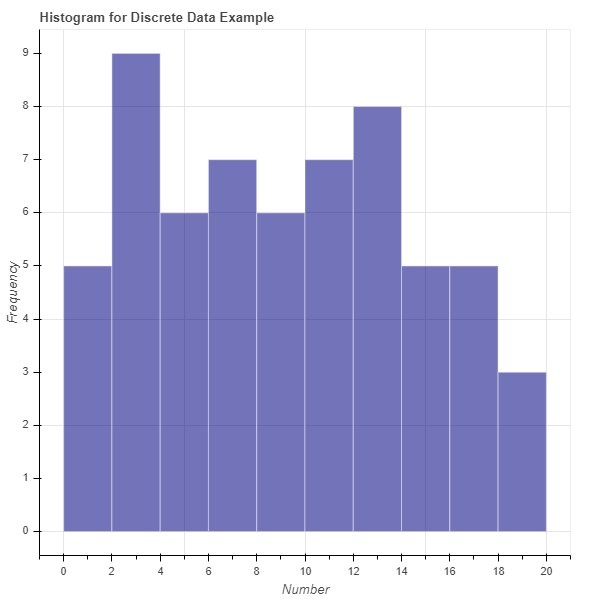
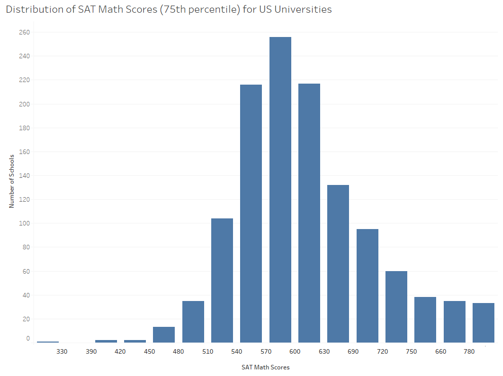
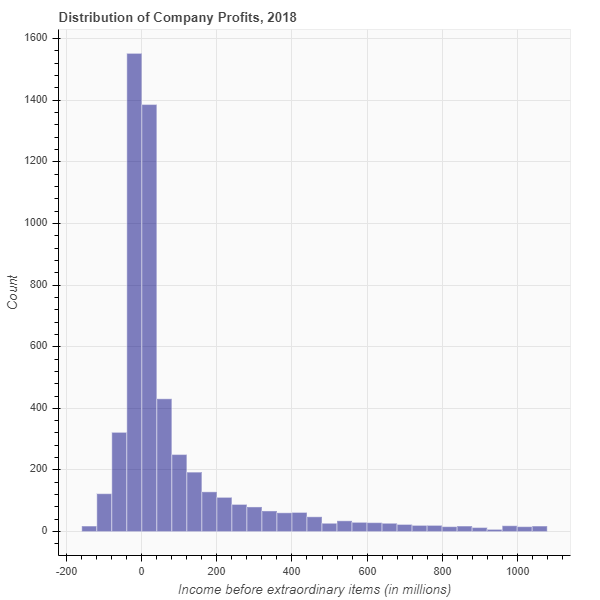
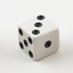

Histograms#
What is a Histogram?#
Histograms and bar charts may appear similar but are actually quite different. These two graph types show different information and are used to answer different questions. Bar charts show differences across categories, typically for a small number of categories. For example, above we showed you a bar chart with the revenues of 10 different companies and one bar per company. What if you wanted a graph that shows the revenue of every publicly traded company in the U.S.? You could make a graph with thousands of bars but that would be very difficult to draw and even more difficult to view. To eliminate this problem, a histogram groups the data into “bins”. In each bin, the histogram counts the number of companies whose revenue is in the bin. Thus, instead of the categories used in a bar chart, a histogram places the numerical data into bins based on whether each number falls within a particular range.
Bins can be any size, and choosing the right bin size can take some trial and error. For example, we might have a bin for companies with revenues of $0 - $5 million, another bin for $5 to $10 million, and so on. Alternatively, each bin could have a width of $10 million, so the bins would be $0 - $10 million, another bin for $10 to $20 million, and so on. Typically, the bins have equal widths. After the bin size is chosen, the data are then placed into the bins and the histogram counts the number of times a data point falls into the bin.
Histograms can handle discrete and continuous data. Discrete data is data that can take on a fixed number of values (e.g. integers or counts), such as:
[1, 13, 15, 17, 1, 2, 1, 13, 10, 2, 11, 6, 19, 12, 5, 6, 1, 18, 12, 3, 4, 15, 1, 10, 10, 16, 15, 2, 13, 3, 11, 6, 11, 8, 12, 9, 15, 2, 4, 16, 5, 9, 9, 12, 13, 7, 4, 17, 4, 18, 6, 17, 2, 7, 8, 8, 15, 11, 6, 3, 2]
Continouous data is numerical data that can be any value (i.e., these values include decimals). Here’s an example:
[1.572, 2, 10.516, 11.6, 3.156, 15.702, 3.02, 6.231, 19.3, 8.34, 14.37, 11.157, 9, 4.702, 10.352, 6.32, 14.98, 7.89, 3.25, 16.93, 17.231, 4.2, 4.73, 13, 12.1, 4.11, 2.864, 5, 14, 8, 7.421, 18.2, 7.314, 10.51, 11.1, 6.4, 4.89, 9.1, 13.26, 10.572, 3.6, 6.31, 5.36]
Let’s see an example of a histogram using the discrete data from above with a bin size of 2. A histogram uses bars to display how many of these numbers fall in each bin. The first bar of the histogram would show how many of these numbers fall in the first bin [0-2) (i.e., are 0 or 1), the second bar of the histogram would show how many of these numbers fall in the second bin [2-4) (i.e., are 2 or 3), the third bar would show how many of these numbers fall into the third bin [4-6) (i.e., are 4 or 5), and so on. See the histogram for the discrete data in Illustration 1.
Illustration 1: Example Histogram (in Bokeh)#

Illustration 1 presents the histogram of the discrete data listed above using 10 bins (bin size of 2). This histogram was created using the Python package Bokeh. Each bar represents the number of times a data point from the discrete data falls into the respective bin. For example, there are five instances of the numbers 0 or 1 and nine instances of the numbers 2 or 3.
To see this, we sorted the data in the list:
[1, 1, 1, 1, 1, 2, 2, 2, 2, 2, 2, 3, 3, 3, 4, 4, 4, 4, 5, 5, 6, 6, 6, 6, 6, 7, 7, 8, 8, 8, 9, 9, 9, 10, 10, 10, 11, 11, 11, 11, 12, 12, 12, 12, 13, 13, 13, 13, 15, 15, 15, 15, 15, 16, 16, 17, 17, 17, 18, 18, 19]
In sum, histograms look very similar to bar charts, but each bar in a histogram represents a bin (number range) instead of a category and the height of the bar is a count of the number of data points that fall into the bin range.
Illustration 2: Example Histogram (in Tableau)#

Illustration 2 presents a histogram of the 75th percentile SAT Math scores for each university in the United States. This histogram was created using the visualization software Tableau. You will note that most schools 75th percentile SAT math scores fall bewteen 530 and 640. As the scores get lower or higher there are fewer schools represented, which makes sense as fewer schools are likely to accept very low scores and fewer schools are likely to have the majority of their admitted students with extremely high scores.3
When to Use a Histogram#
Histograms are useful when trying to understand the composition or distribution of your data. For example, you may want to know around which numbers your data are concentrated. In a histogram you might see one hump, which tells you most of your data falls around one area, or you might see multiple humps in the histogram, which tells you that your data is concentrated around several numbers. Histograms also provide information on whether your data is centered or skewed in one direction.
Histograms in Bokeh#
Review of Histograms#
Remember that a histogram shows the distribution of a single variable. It takes all data values for that variable and groups them into bins. The histogram then shows one bar per bin. The x-location of the bar is the range of the bin, and the height of the bar is the number of data values that fall into that bin.
As an example, consider the following histogram. It shows the income before extraordinary items of all publicly traded companies in 2018.

Let’s look at the histogram and its shape. We can learn a lot from the shape. In the histogram above, we see that the most common values of income are near zero! And in 2018, more companies had slightly negative income than slightly positive income. We also see a long “tail” on the right. That means that a very small number of companies reported very high incomes.
Each bar of the histogram represents one bin. In this case, each bin spans $40 million dollars. You can tell that by looking at the width of each bar relative to the x-axis. For example, let’s look at the bar that is just to the right of 0. The width of that bar is 40, indicating that the bin spans the values $0 to $40 million. The height of that bar is approximately 1,400. That means that approximately 1,400 companies had income between $0 and $40 million. Now take a look at the bar just to the right of 1,000. Its height is approximately 20. That means that only 20 companies had an income between $1,000 and $1,040.
How to Create a Histogram#
Pseudo-Code for Creating a Histogram#
It’s time for you to learn how to create a histogram. Let’s begin with the pseudo-code. Say you have a list of data values stored in the variable mydata. Starting with that list, here are the steps for creating a histogram:
Decide how many bins you want. Store this value in the variable numbins.
Sometimes, there is an obvious choice for the number of bins.
More often, you need to experiment with the number of bins.
Create the variable binwidth to store the width of each bin.
For continuous data, first compute the minimum and maximum value in mydata. Store these in the variables minval and maxval. Then compute bin width as ((maxval - minval) / numbins).
For discrete data, the choice of binwidth is a style choice.
Create a new list called edges. It will have (numbins + 1) elements. This list contains the “edges” of each bin.
The first element will be minval.
The next element will be (minval + binwidth).
The next element will be (minval + 2*binwidth).
…
The last element will be maxval.
Create a new list called counts. Its length should be numbins and initially all elements should be zero.
For each value x in mydata;
Determine the bin to which x belongs.
Add 1 to the value in counts corresponding to this bin.
Create a plot in Bokeh.
Draw one bar per bin.
The x-location of the bar spans two edges.
The height of the bar is the number of observations in the corresponding bin.
Sample Histogram: Dice Rolls#
In this example, we are going to simulate the act of rolling a single 6-sided die. Just to be clear, when we say a 6-sided die, we mean something like this:

Generating our data#
First, let’s generate some data. The possible outcomes of a single die roll are 1, 2, 3, 4, 5, and 6. We can simulate this with a random number generator.
Run the following code. It will create a list called mydata that contains the outcomes of 20 rolls of a single die.
import numpy as np
np.random.seed(3)
NUM_ROLLS = 20
mydata = np.random.randint(1, 7, NUM_ROLLS).tolist()
mydata
[3, 1, 2, 4, 1, 1, 1, 6, 6, 4, 3, 4, 2, 2, 3, 6, 1, 5, 5, 6]
Choose number of bins#
Since there are six possible outcomes, it makes sense to have exactly six bins. Therefore, run the following code cell.
numbins = 6
Choose bin width#
We have discrete data. The outcomes are 1 - 6, so let’s set the bin width to 1. Run the following code cell.
binwidth = 1
Compute edges#
The edges are the boundaries between bins. Since we have discrete data, let’s center the bins on each outcome. That means that the bin for an outcome of 1 will span the range [0.5,1.5]. The bin for the outcome of 2 will span the range [1.5,2.5]. And so on.
Run the following code cell.
edges = [0.5, 1.5, 2.5, 3.5, 4.5, 5.5, 6.5]
Notice that we have 7 edges. If you have n bins, you will always need n+1 edges.
Create a list counts to store the count in each bin#
counts = [0] * numbins
counts
[0, 0, 0, 0, 0, 0]
In the list counts, the first element corresponds to the number of 1’s in the data. The second element corresponds to the number of 2’s in the data. And so on.
Count the number of outcomes in each bin#
We need to iterate over the list mydata. Every time we see a 1, we need to update the count of the number of 1’s. Every time we see a 2, we need to update the number of 2’s. Etc.
Run the following code, which updates the list counts based on the values in mydata.
for x in mydata:
counts[x-1] = counts[x-1] + 1
counts
[5, 3, 3, 3, 2, 4]
The list counts now tells us that there are five 1’s in the data, three 2’s, three 3’s, and so on.
Create the histogram using Bokeh#
Run the following code cell to create a histogram in Bokeh and then we’ll discuss it.
from bokeh.plotting import figure, show
from bokeh.io import output_notebook
output_notebook()
p = figure(title='Distribution of simulated dice rolls',
x_axis_label='Outcome',
y_axis_label='Count',
width = 400,
height = 400)
p.quad(top=counts,
bottom=0,
left=edges[:-1],
right=edges[1:],
fill_color="navy",
line_color="white",
alpha=0.6)
show(p)
First, let’s take a look at our histogram. It shows us that we rolled 1 five times. We rolled 2 three times. We rolled 6 four times. Etc.
Did you expect that? Shouldn’t each roll be equally likely? It turns out that, when you repeat an experiment a small number of times, it is common to find something like this. However, if you repeat the experiment many times, the true probabilities will be revealed. If you could run the experiment an infinite number of times, you would find that each die roll appears the same number of times.
Okay, now let’s talk about the code. The only line of code that should appear new to you is:
p.quad(top=counts,
bottom=0,
left=edges[:-1],
right=edges[1:],
fill_color="navy",
line_color="white",
alpha=0.6)
In Bokeh, the “quad” method draws a quadrilateral (specifically, a rectangle). Notice the arguments. We tell Bokeh the top, bottom, left, and right of the rectangle. The top is the count. The bottom is always 0. And for the left and right, we use the edges. This is why there is always 1 more edge than bins. To draw 1 rectangle, we need 2 edges. To draw 2 rectangles, we need 3 edges. And to draw n rectangles, we need n+1 edges.
Putting all the code together#
In this section, I copied and pasted all of the code from above into one cell. That will allow you to see everything in one place. I also changed the number of rolls from 20 to 1,000,000.
For fun, feel free to experiment with the number of rolls. See what happens as you increase the number of rolls. Choose a large number, like 1,000,000.
# This line of code ensures that we always get the same random result.
# This makes the experiment "repeatable". Comment this line out if you
# want a different result
np.random.seed(3)
# The number of simulated die rolls
NUM_ROLLS = 1000000
# Run the experiment! Simulate NUM_ROLLS rolls of the die.
mydata = np.random.randint(1, 7, NUM_ROLLS).tolist()
# The number of bins for our histogram.
numbins = 6
# The width of each bin in our histogram.
binwidth = 1
# The bin edges.
edges = [(i - 0.5) for i in range(1,8)]
# Create a list to store the counts of our die rolls
counts = [0] * numbins
# Iterate over the data and count the number of 1's, 2's, etc.
for x in mydata:
counts[x-1] = counts[x-1] + 1
# Create a figure in Bokeh
p = figure(title='Distribution of simulated dice rolls',
x_axis_label='Outcome', y_axis_label='Count',
width = 400, height = 400)
# Draw one rectangle for each bin
p.quad(top=counts, bottom=0,
left=edges[:-1], right=edges[1:],
fill_color="navy", line_color="white", alpha=0.6)
show(p)
An easier way to bin your data#
As with everything in programming, there’s usually a built-in function to accomplish your task. It turns out that there’s a really good histogram function in the library NumPy. It doesn’t generate a plot, but it computes the edges and counts the data for you. Why didn’t we tell you that above? Because we wanted you to understand what’s going on. And because it’s fun to torture you. ;-)
Let’s run the numpy histogram function on our data in mydata and see what it returns. First, run the cell below. It’s a copy of the code from above that generates 20 die rolls.
import numpy as np
np.random.seed(3)
NUM_ROLLS = 20
mydata = np.random.randint(1, 7, NUM_ROLLS).tolist()
mydata
[3, 1, 2, 4, 1, 1, 1, 6, 6, 4, 3, 4, 2, 2, 3, 6, 1, 5, 5, 6]
Now, try out the following function and see what you think:
hist = np.histogram(mydata, bins=[0.5, 1.5, 2.5, 3.5, 4.5, 5.5, 6.5])
hist
(array([5, 3, 3, 3, 2, 4], dtype=int64),
array([0.5, 1.5, 2.5, 3.5, 4.5, 5.5, 6.5]))
We gave the function numpy.histogram our data. We also gave it a list of edges. It return a tuple containing two lists. The first list contains the counts. The second list contains the edges.
Why did it give us back the edges if we passed it the edges as an argument? Because numpy.histogram can also take as an argument the number of bins you want. It will then compute the edges for you. For example, try the following code:
hist = np.histogram(mydata, bins=6)
hist
(array([5, 3, 3, 3, 2, 4], dtype=int64),
array([1. , 1.83333333, 2.66666667, 3.5 , 4.33333333,
5.16666667, 6. ]))
In the above code, we told numpy.histogram that we want 6 bins. It then computed those and returned them to us. Let’s plot the resulting histogram.
counts = hist[0]
edges = hist[1]
# Create a figure in Bokeh
p = figure(title='Distribution of simulated dice rolls',
x_axis_label='Outcome', y_axis_label='Count',
width = 400, height = 400)
# Draw one rectangle for each bin
p.quad(top=counts, bottom=0,
left=edges[:-1], right=edges[1:],
fill_color="navy", line_color="white", alpha=0.6)
show(p)
In the above graph, it’s not easy to figure out which bar corresponds to which die roll. That’s why I originally created the list of edges myself.
SUMMARY: The function numpy.histogram can compute bins, edges, and counts for you.
Creating a Histogram in Tableau#
Watch this video to learn about histograms in Tableau:
https://mediaspace.illinois.edu/media/t/1_oqlcky4c